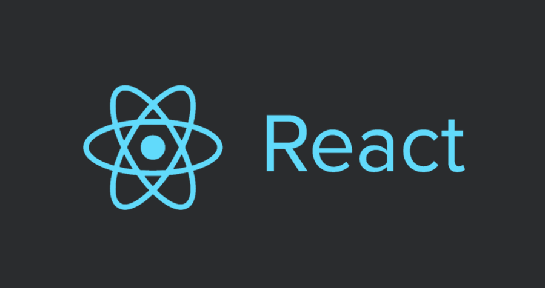

HTML — стандартизированный язык разметки веб-страниц во Всемирной паутине. Код HTML интерпретируется браузерами; полученная в результате интерпретации страница отображается на экране монитора компьютера или мобильного устройства.
Язык HTML до 5-й версии определялся как приложение SGML (стандартного обобщённого языка разметки по стандарту ISO 8879). Спецификации HTML5 формулируются в терминах DOM (объектной модели документа).
Строгим вариантом HTML является XHTML, он наследует синтаксис XML и является приложением языка XML в области разметки гипертекста.
HTML-страницы, как правило, открываются браузерами обмениваясь с сервером информацией по протоколу HTTP или HTTPS, в виде простого текста или с использованием шифрования.
CSS (Cascading Style Sheets) — язык таблиц стилей, который позволяет прикреплять стиль (например, шрифты и цвет) к структурированным документам (например, документам HTML и приложениям XML).
Обычно CSS-стили используются для создания и изменения стиля элементов веб-страниц и пользовательских интерфейсов, написанных на языках HTML и XHTML, но также могут быть применены к любому виду XML-документа, в том числе XML, SVG и XUL.
Написание CSS само по себе весело, но когда таблица стилей становится огромной, то становится и сложно её обслуживать. И вот в таком случае нам поможет препроцессор. Sass позволяет использовать функции недоступные в самом CSS, например, переменные, вложенности, миксины, наследование и другие приятные вещи, возвращающие удобство написания CSS.
Как только Вы начинаете пользоваться Sass, препроцессор обрабатывает ваш Sass-файл и сохраняет его как простой CSS-файл, который Вы сможете использовать на любом сайте.
JavaScript это язык, который позволяет вам применять сложные вещи на web странице — каждый раз, когда на web странице происходит что-то большее, чем просто её статичное отображение — отображение периодически обновляемого контента, или интерактивных карт, или анимация 2D/3D графики, или прокрутка видео в проигрывателе, и т.д. — можете быть уверены, что скорее всего, не обошлось без JavaScript. Это третий слой слоёного пирога стандартных web технологий, два из которых (HTML и CSS).
React - это библиотека JavaScript, которая используется для создания пользовательского интерфейса. React был создан компанией Facebook, а первый релиз библиотеки увидел свет в марте 2013 года. Первоначально React предназначался для веба, для создания веб-сайтов, однако позже появилась платформа React Native, которая уже предназначалась для мобильных устройств.
React представляется идеальный инструмент для создания масштабируемых веб-приложений (в данном случае речь идет о фронтенде), особенно в тех ситуациях, когда приложение представляет SPA (одностраничное приложение).
React относительно прост в освоении, имеет понятный и лаконичный синтаксис.

Что такое Redux ? Это менеджер состояний. Чаще всего его используют с React, но его возможности не ограничиваются одной этой библиотекой. Хотя в React есть собственный метод управления состояниями (почитать о нём можно в руководстве по React), он плохо масштабируется. Перемещение состояния вверх по дереву работает для простых приложений, но в более сложных архитектурах изменение состояния производится через свойства (props). Ещё лучше делать это через внешнее глобальное хранилище.
Библиотека Redux — это способ управления состоянием приложения. Она основана на нескольких концепциях, изучив которые, можно с лёгкостью решать проблемы с состоянием. Вы узнаете о них далее, в этом руководстве по Redux для начинающих.
Git – это распределенная система контроля версий и управления исходным кодом с упором на скорость. Первоначально Git был разработан и разработан Линусом Торвальдсом для разработки ядра Linux. Git – это бесплатное программное обеспечение, распространяемое в соответствии с условиями GNU General Public License версии 2. Основное отличие Git от любой другой СКВ (включая Subversion и её собратьев) — это подход к работе со своими данными. Концептуально, большинство других систем хранят информацию в виде списка изменений в файлах. Эти системы (CVS, Subversion, Perforce, Bazaar и т. д.) представляют хранимую информацию в виде набора файлов и изменений, сделанных в каждом файле, по времени. Git не хранит и не обрабатывает данные таким способом.